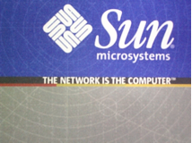

3. Mobilidade e Interação
Neste tópico discutimos os temas da mobilidade e da interação. Iniciamos pela revolução proporcionada pela mobilidade a partir da conexão não mais fixa, mas agora "mobile" dos dispositivos móveis como, o Tablet e o smartphone. Quando Steve Jobs apresentou ao público o "iPad", o primeiro tablet do mercado, a justificativa foi bastante clara (ver vídeo). Segundo Jobs, entre o Smartphone e o Notebook, o Netbook não era a melhor escolha. Não bastava diminuir o Notebook para suprir as necessidades de mobilidade dos usuários. Era necessário que fosse implementado no mercado algo que fosse de fácil manuseio e que não fosse tão pequeno como o celular.
A ideia de mobilidade foi o principal motivo de estímulo para as pessoas comprarem o iPad (status também, é claro), tanto que o ato de ler ou enviar um e-mail, com o tablet, agora poderia ser feito em qualquer parte da casa, para usar um exemplo simples. Não que isso não fosse possível com o notebook, mas é que agora um dispositivo (device) adaptado para este fim existia: o tablet. Antes disso, a cibercultura recebia vigorosos ataques discursivos ao dizerem que as pessoas estavam ficando cada vez mais estáticas em suas mesas e cadeiras onde estava o computador. Com o "mobile", o corpo voltou a deslocar-se pelo espaço em uma [re]territorialização digital e física.
Movimentar é sempre ‘deslocar’, o que poderia levar rapidamente à ideia de um ‘apagamento’ dos lugares. No entanto o deslocamento (mobilidade física e informacional) não significa, necessariamente, o desaparecimento da dimensão espacial em sua materialidade e em suas dimensões sociais, políticas e econômicas (LEMOS, 2010: 162).
O mapa do Google e seus "pingos" localizados nos "pontos de conexão" (IDEM), são os guias da "performance" no território físico, amparado por instruções digitais oriundas do ciberespaço. A partir das referências subsidiadas pelo software, é possível a interação mediada por interfaces cada vez mais "amigáveis" e ergonomicamente adaptada.
O acesso aos meios de produção cultural com a variedade de instrumentos tecnológicos a um preço cada vez mais acessível é o terreno fértil para a produção cultural descentralizada que viabiliza os mapas digitais, mas também a reconfiguração das interações com produtos culturais como os filmes por exemplo.
Encontrando maneiras de ganhar dinheiro ao mesmo tempo em que é pressionada a se curvar a vibração da "cultura da convergência" (JENKINS, 2009), a indústria absorve, a sua maneira, a criatividade alternativa. Um exemplo disso foi,
[...] quando a AtomFilms lançou um concurso oficial de filmes dos fãs de Guerra nas Estrelas, em 2003, recebeu mais de 250 inscrições. Embora o entusiasmo tenha diminuído um pouco, o concurso de 2005 recebeu mais de 150 inscrições. E muitos outros filmes, que estariam fora das regras do concurso oficial estão surgindo na web em sites não oficiais como o TheForce.net (JENKINS, 2009: 187-8).
Jenkins (2009) considera esse fenômeno como sendo fruto da produção primeiramente dos fãs, que de forma amadora são os primeiros a incorporar os elementos visuais e simbólicos de cada produto fazendo o uso de figurinos e reproduzindo cenários, "virtualizando" a produção cultural para logo após "atualizar" a partir da recriação de algo que pode ser considerado original, mas que se ancora em elementos chaves já existentes e produzidos pela indústria cultural. Essa situação só é possível por conta da cultura da interação que cresce cada vez mais. Apesar de os dispositivos contribuírem para a interação humana a partir das interfaces, cabe identificar uma "cultura" que proporciona interagirmos de várias maneiras.
Página 151Assim como diz a publicidade da empresa de computadores Sun Microsystems "The Network is The Computer" (A Rede é o Computador). O slogan foi criado por John Cage, em 2008, e expressa cada vez mais a realidade da internet. Se formos pensar que a metáfora da "nuvem" foi criada no último período para estimular as pessoas a manterem seus arquivos não mais nas pastas dos seus computadores pessoais, mas agora, nas nuvens, concluiremos que a internet é o verdadeiro computador.
{kind=link}
Publicidade da Sun Microsystems “A Rede é o Computador” (2008)
A dinâmica de depositar conteúdos nas nuvens é uma tendência. Por um lado contribui enormemente para o fluxo das informações, pois agora não preciso mais do "meu" computador pessoal, mas de um espaço na "nuvem" que será acessível de qualquer computador conectado. Por outro lado, torna ainda mais complexa e profunda a efemeridade dos "chassis" da informação. Vemos assim, que a interação com as máquinas sofre transformações a cada período.
A professora Lúcia Santaella, em 2004, destacou que a interatividade tem suas gradações. Segundo a autora, Kretz teria estabelecido, em 1985, seis níveis para interação, onde o primeiro nível seria o da interatividade zero, a exemplo dos romances, discos, cassetes, que são acompanhados de forma linear do seu começo ao fim, e o último seria a interatividade de comando contínuo, onde é permitida a modificação mediante manipulação do usuário, como no caso de alguns videogames. Santaella (2004) prossegue com algumas outras citações sobre a interação e faz destaque ao trabalho reflexivo desenvolvido por Manovich (2001). Pela visão do autor, teríamos dois tipos de interação: uma fechada e outra aberta. A interação fechada refere-se ao caminho que o usuário percorre em uma "estrutura arbórea", realizando alguns comandos de opções que uma determinada árvore prevê. A interação aberta é o tipo que permite serem implementadas uma "variedade de procedimentos, tais como programas orientados a objetos, inteligência artificial, vida artificial e redes neurais" (SANTAELLA, 2004, p. 158). Com isso, podemos perceber que existem níveis de interação onde modalidades tecnológicas podem ter serventia ao usuário de determinado sistema.
Tanto com a utilização de ferramentas analógicas como no uso das mídias digitais, a produção cultural deve interpenetrar ambas as tecnologias para cumprir com suas finalidades. No próximo tópico, veremos diversas estratégias de comunicação no âmbito da cultura, partindo da aplicabilidade das ferramentas.